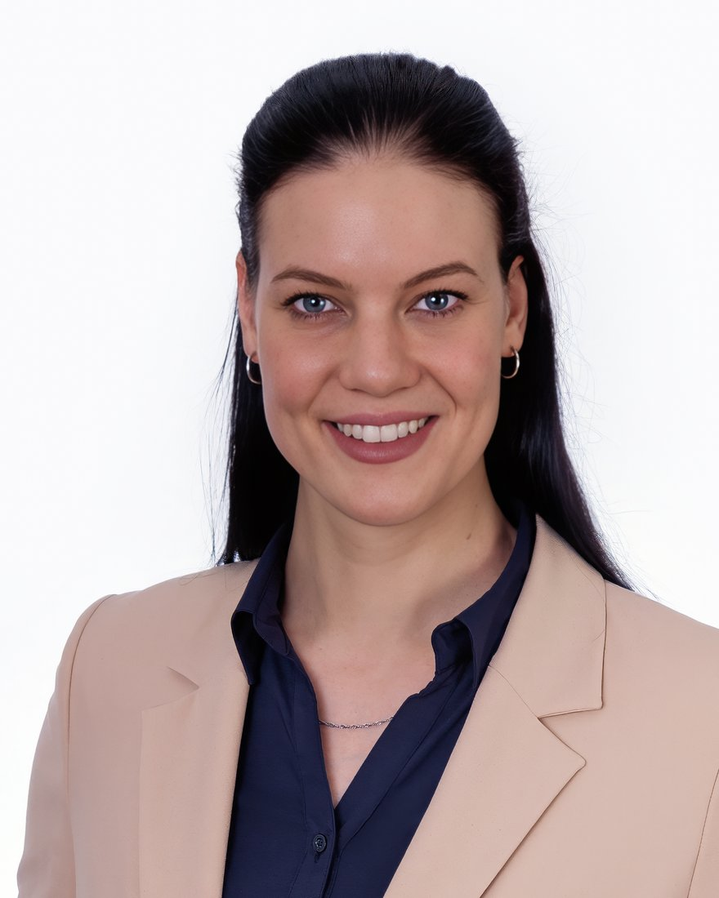

Bewerbung als E‑Commerce Managerin
Testen, messen, besser verkaufen.
Statt eines klassischen Anschreibens zeige ich Ihnen hier, wie ich arbeite: mit einem Video meines eigenen Onlineshops und einer Case Study aus meiner Weiterbildung.

UNTERNEHMERISCH GEDACHT. HANDS-ON UMGESETZT.
Einen eigenen D2C-Onlineshop habe ich mitgegründet, von Grund auf aufgebaut und fünf Jahre lang betrieben. Dazu gehörten A/B-Tests, Newsletter und die laufende Optimierung der Customer Journey ebenso wie die Weiterentwicklung des Shops. Parallel habe ich ein Fotofachgeschäft mit Studio kaufmännisch geleitet, inklusive Einkauf sowie Umsatz-, Margen- und Personalverantwortung. Daher weiß ich, wie sich Entscheidungen unmittelbar auf Umsatz und Marge auswirken.
Als mein langjähriger Arbeitgeber Insolvenz anmelden musste, habe ich die Gelegenheit genutzt und mein Praxiswissen mit einer Vollzeitweiterbildung im E-Commerce auf den aktuellen Stand gebracht. Dabei habe ich vorhandenes Wissen vertieft und gezielt um Shopify, UX-Design, CRM, Conversion-Tracking, GA4 und Marketing Automation erweitert. KI-Tools und Automatisierung setze ich gezielt ein, um Prozesse zu optimieren und wiederkehrende Aufgaben effizienter zu machen. Als Grafik-Designerin und Fotomedienfachfrau bringe ich außerdem ein sicheres Auge für visuelle Gestaltung mit, von Produktbildern und Shopseiten bis zu Bannern und Werbemitteln.
- 5 Jahre
- eigener Onlineshop als Mitgründerin
- 10 Jahre
- im selben Unternehmen, bis zur Filial- und Studioleitung aufgestiegen
- 96 %
- Abschlussergebnis als Applied E‑Commerce Managerin
Analysieren. Testen. Skalieren.
Gute Shops entstehen nicht aus Bauchgefühl, sondern aus vielen kleinen, gemessenen Verbesserungen. So gehe ich dabei vor:
-
01
Analysieren.
Ich schaue mit den Augen der Kunden und mit Blick auf die Zahlen auf den Shop: Wo bricht die Customer Journey ab, welche KPI bremst, welche Produktseite verschenkt Potenzial?
-
02
Testen.
Aus jeder Beobachtung wird eine klare Hypothese. Ich setze A/B‑Tests auf, werte sie sauber aus und entscheide auf Basis von Daten.
-
03
Skalieren.
Was funktioniert, setze ich gemeinsam mit UX/UI, CRM und Entwicklung im Shop um und bereite es so auf, dass erfolgreiche Ansätze auf weitere Shops und Märkte übertragbar sind. Dokumentiert, messbar und mit KI und Automatisierung effizient umgesetzt.
- Shopify
- WordPress + WooCommerce
- JTL-Shop
- GA4
- Google Tag Manager
- Google Ads
- Meta Ads
- Brevo
- n8n
- ChatGPT
- Codex
- Claude
- Claude Code
- Adobe Photoshop
- Adobe Illustrator
- Adobe InDesign
- Canva
- Billbee
- Lexoffice
- Midjourney
- Amazon Seller Central
- Microsoft 365
- DHL Geschäftskundenportal
Ich bin ab sofort verfügbar und freue mich auf ein Gespräch.
RoyalShrimp.de
Eigener D2C‑Onlineshop mit WordPress & WooCommerce
Cuply
Marketing-Konzept: Landingpage, Content & Conversion

Konzeptarbeit für ein fiktives Beispielprodukt.
Gesamte Case Study ansehen